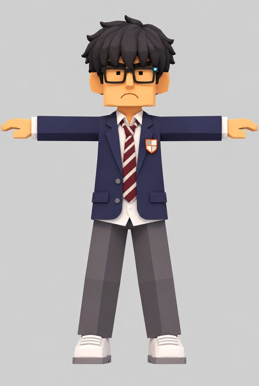
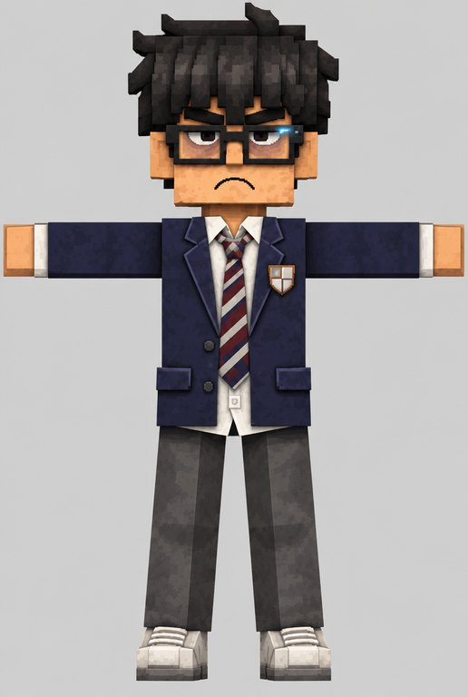

아트 스타일 3D 비교 — 1번 vs 4번
왼쪽은 힉스필드 그림, 오른쪽은 그 그림을 Meshy로 옮긴 실제 3D예요. 3D는 끌어서 돌려 볼 수 있어요. 그림과 얼마나 같은지 보고 골라 주세요.
1번 깔끔한 로우폴리

힉스필드 그림
Meshy 3D (면 5천 개)
4번 블록

힉스필드 그림
Meshy 3D (면 5천 개) — 팔이 하나 더 생김
4번 블록 — 직접 조립
힉스필드 그림
상자 23개를 코드로 조립 (면 276개)